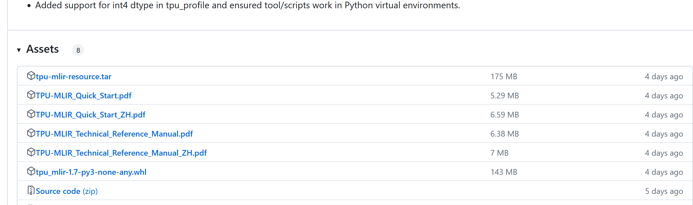
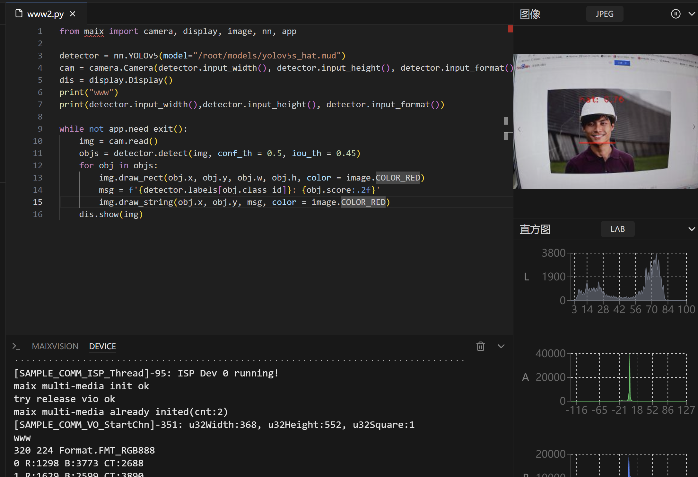

中文
中文MaixPy 自定义（离线训练） AI 模型和运行
2024-04-24
更新历史
| 日期 | 版本 | 作者 | 更新内容 |
|---|---|---|---|
| 2024-4-23 | v1.0 | dragonforward | 加入了YOLOv5s部署 |
本文来自社区用户 dragonforward 的贡献
本博客将向你展示零基础一步步的部署好自己的yolov5s模型（博主展示的是安全帽模型），训练就引用我自己之前写过的，已经训练好的可以跳过该部分，其中有部分不一样。
获得自定义训练得到的yolov5s onnx模型
准备自定义数据集（博主用的是VOC数据集）
数据集目录结构如下：
└─VOC2028: 自定义数据集
├─Annotations 存放的是数据集标签文件，xml格式
├─ImageSets 数据集的划分文件
│ └─Main
├─JPEGImages 存放的是数据集图片
分割数据集
在split_train_val.py文件路径下执行python3 split_train_val.py会得到一下目录结构：
└─VOC2028: 自定义数据集
├─Annotations 存放的是数据集标签文件，xml格式
├─ImageSets 数据集的划分文件
│ └─Main test.txt
└─test.txt
└─train.txt
└─val.txt
├─JPEGImages 存放的是数据集图片
├─split_train_val.py 分割数据集的py文件
split_train_val.py文件代码如下：
# -*- coding: utf-8 -*-
"""
Author:dragonforward
简介：分训练集、验证集和测试集，按照 8：1：1 的比例来分，训练集8，验证集1，测试集1
"""
import os
import random
import argparse
parser = argparse.ArgumentParser()
# xml文件的地址，根据自己的数据进行修改 xml一般存放在Annotations下
parser.add_argument('--xml_path', default='Annotations/', type=str, help='input xml label path')
# 数据集的划分，地址选择自己数据下的ImageSets/Main
parser.add_argument('--txt_path', default='ImageSets/Main/', type=str, help='output txt label path')
opt = parser.parse_args()
train_percent = 0.8 # 训练集所占比例
val_percent = 0.1 # 验证集所占比例
test_persent = 0.1 # 测试集所占比例
xmlfilepath = opt.xml_path
txtsavepath = opt.txt_path
total_xml = os.listdir(xmlfilepath)
if not os.path.exists(txtsavepath):
os.makedirs(txtsavepath)
num = len(total_xml)
list = list(range(num))
t_train = int(num * train_percent)
t_val = int(num * val_percent)
train = random.sample(list, t_train)
num1 = len(train)
for i in range(num1):
list.remove(train[i])
val_test = [i for i in list if not i in train]
val = random.sample(val_test, t_val)
num2 = len(val)
for i in range(num2):
list.remove(val[i])
file_train = open(txtsavepath + '/train.txt', 'w')
file_val = open(txtsavepath + '/val.txt', 'w')
file_test = open(txtsavepath + '/test.txt', 'w')
for i in train:
name = total_xml[i][:-4] + '\n'
file_train.write(name)
for i in val:
name = total_xml[i][:-4] + '\n'
file_val.write(name)
for i in list:
name = total_xml[i][:-4] + '\n'
file_test.write(name)
file_train.close()
file_val.close()
file_test.close()
voc转label得到label文件
目录结构如下：
└─VOC2028: 自定义数据集
├─Annotations 存放的是数据集标签文件，xml格式
├─ImageSets 数据集的划分文件
│ └─Main
├─JPEGImages 存放的是数据集图片
└─labels yolov5将此文件夹当作训练的标注文件夹
└─voc_label.py
voc_label.py文件代码如下：
# -*- coding: utf-8 -*-
import xml.etree.ElementTree as ET
import os
sets = ['train', 'val', 'test'] # 如果你的Main文件夹没有test.txt，就删掉'test'
classes = ["hat", "people"] # 改成自己的类别，VOC数据集有以下20类别
# classes = ["brickwork", "coil","rebar"] # 改成自己的类别，VOC数据集有以下20类别
# classes = ["aeroplane", 'bicycle', 'bird', 'boat', 'bottle', 'bus', 'car', 'cat', 'chair', 'cow', 'diningtable', 'dog',
# 'horse', 'motorbike', 'person', 'pottedplant', 'sheep', 'sofa', 'train', 'tvmonitor'] # class names
# abs_path = os.getcwd() /root/yolov5/data/voc_label.py
abs_path = '/root/yolov5/data/'
def convert(size, box):
dw = 1. / (size[0])
dh = 1. / (size[1])
x = (box[0] + box[1]) / 2.0 - 1
y = (box[2] + box[3]) / 2.0 - 1
w = box[1] - box[0]
h = box[3] - box[2]
x = x * dw
w = w * dw
y = y * dh
h = h * dh
return x, y, w, h
def convert_annotation(image_id):
in_file = open(abs_path + '/VOC2028/Annotations/%s.xml' % (image_id), encoding='UTF-8')
out_file = open(abs_path + '/VOC2028/labels/%s.txt' % (image_id), 'w')
tree = ET.parse(in_file)
root = tree.getroot()
size = root.find('size')
w = int(size.find('width').text)
h = int(size.find('height').text)
for obj in root.iter('object'):
difficult = obj.find('difficult').text
# difficult = obj.find('Difficult').text
cls = obj.find('name').text
if cls not in classes or int(difficult) == 1:
continue
cls_id = classes.index(cls)
xmlbox = obj.find('bndbox')
b = (float(xmlbox.find('xmin').text), float(xmlbox.find('xmax').text), float(xmlbox.find('ymin').text),
float(xmlbox.find('ymax').text))
b1, b2, b3, b4 = b
# 标注越界修正
if b2 > w:
b2 = w
if b4 > h:
b4 = h
b = (b1, b2, b3, b4)
bb = convert((w, h), b)
out_file.write(str(cls_id) + " " + " ".join([str(a) for a in bb]) + '\n')
for image_set in sets:
if not os.path.exists(abs_path + '/VOC2028/labels/'):
os.makedirs(abs_path + '/VOC2028/labels/')
image_ids = open(abs_path + '/VOC2028/ImageSets/Main/%s.txt' % (image_set)).read().strip().split()
list_file = open(abs_path + '/VOC2028/%s.txt' % (image_set), 'w')
for image_id in image_ids:
list_file.write(abs_path + '/VOC2028/JPEGImages/%s.jpg\n' % (image_id)) # 要么自己补全路径，只写一半可能会报错
convert_annotation(image_id)
list_file.close()

训练模型
- 配置环境
git clone https://github.com/ultralytics/yolov5
cd yolov5
pip install -r requirements.txt
pip install onnx
- 下载预训练权重（博主尝试了v7.0的和v6.0的pt都可以）
https://github.com/ultralytics/yolov5/releases/download/v7.0/yolov5s.pt

- 训练（博主使用的是学校的集群进行训练）
python3 train.py --weights weights/yolov5s.pt --cfg models/yolov5s.yaml --data data/safthat.yaml --epochs 150 --batch-size 16 --multi-scale --device 0

python3 detect.py --source /root/yolov5/data/images/000000.jpg --weights /root/yolov5/runs/train/exp13/weights/best.pt --conf-thres 0.25
- 导出onnx模型，由于学校服务器目前去教学上课去了，他们上完课才能分配我就用电脑本机的conda环境导出
下面为啥使用-imgsz 224 320,原因就是比较适配屏幕，加上我尝试640640的，摄像头报错，提示是640480这样，然后我就看到sipeed那个yolov5s是320*224的，我也就和他保持一致吧
python export.py --weights yolov5s_hat.pt --include onnx --opset 16 --imgsz 224 320

模型查看通过网址输入netron.app查看三个输出：
下面是博主的三个输出
onnx::Shape_329
onnx::Shape_384
onnx::Shape_439
模型转化（关键）
安装docker环境（已安装过的可以跳过）
安装docker依赖的基础软件
sudo apt-get update
sudo apt-get install apt-transport-https ca-certificates curl gnupg-agent software-properties-common
添加官方来源
curl -fsSL https://download.docker.com/linux/ubuntu/gpg | sudo apt-key add -
sudo add-apt-repository "deb [arch=amd64] https://download.docker.com/linux/ubuntu $(lsb_release -cs) stable"
安装 docker
sudo apt-get update
sudo apt-get install docker-ce docker-ce-cli containerd.io
开始量化模型实操（！！！）
准备工作
https://github.com/sophgo/tpu-mlir/releases/tag/v1.7
上面网址下载
tpu-mlir-resource.tar 和 tpu_mlir-1.7-py3-none-any.whl

为什么拉取最新版，因为我用3.1版本失败了，工具在一直更新，最好保持最新，可以看下面图片我使用3.1版本也试过
docker pull sophgo/tpuc_dev:latest
进入容器后将上面的准备的两个文件拷贝到workspace目录
root@3d517bc7f51f:/workspace/model_yolov5s# cd ..
root@3d517bc7f51f:/workspace# ls
model_yolov5s tpu-mlir-resource tpu-mlir-resource.tar tpu_mlir-1.7-py3-none-any.whl
root@3d517bc7f51f:/workspace#
下面两个二选一，我建议是第二个，离线安装
pip install tpu_mlir[all]或者pip install tpu_mlir-*-py3-none-any.whl[all]
博主是选的第二个
pip install tpu_mlir-1.7-py3-none-any.whl
以及安装它的全部依赖
pip install tpu_mlir-1.7-py3-none-any.whl[all]
解压
tar -xvf tpu-mlir-resource.tar
修改文件夹名字
mv regression/ tpu-mlir-resource/
mkdir model_yolov5s && cd model_yolov5s
cp -rf ../tpu_mlir_resource/dataset/COCO2017 .
cp -rf ../tpu_mlir_resource/image .
把之前准备好的图片100张一集一张测试图片和onnx模型传递到如下
root@3d517bc7f51f:/workspace# cd model_yolov5s/
root@3d517bc7f51f:/workspace/model_yolov5s# ls
COCO2017 image workspace yolov5n_hat.onnx yolov5s_hat.onnx
root@3d517bc7f51f:/workspace/model_yolov5s# cd COCO2017/
root@3d517bc7f51f:/workspace/model_yolov5s/COCO2017# ls
000000.jpg 000011.jpg 000022.jpg 000032.jpg 000042.jpg 000053.jpg 000066.jpg 000076.jpg 000086.jpg 000096.jpg
000002.jpg 000012.jpg 000023.jpg 000033.jpg 000043.jpg 000054.jpg 000067.jpg 000077.jpg 000087.jpg 000101.jpg
000003.jpg 000013.jpg 000024.jpg 000034.jpg 000044.jpg 000055.jpg 000068.jpg 000078.jpg 000088.jpg 000102.jpg
000004.jpg 000014.jpg 000025.jpg 000035.jpg 000045.jpg 000058.jpg 000069.jpg 000079.jpg 000089.jpg 000103.jpg
000005.jpg 000015.jpg 000026.jpg 000036.jpg 000046.jpg 000059.jpg 000070.jpg 000080.jpg 000090.jpg 000104.jpg
000006.jpg 000016.jpg 000027.jpg 000037.jpg 000048.jpg 000061.jpg 000071.jpg 000081.jpg 000091.jpg 000105.jpg
000007.jpg 000017.jpg 000028.jpg 000038.jpg 000049.jpg 000062.jpg 000072.jpg 000082.jpg 000092.jpg 000106.jpg
000008.jpg 000019.jpg 000029.jpg 000039.jpg 000050.jpg 000063.jpg 000073.jpg 000083.jpg 000093.jpg 000107.jpg
000009.jpg 000020.jpg 000030.jpg 000040.jpg 000051.jpg 000064.jpg 000074.jpg 000084.jpg 000094.jpg 000108.jpg
000010.jpg 000021.jpg 000031.jpg 000041.jpg 000052.jpg 000065.jpg 000075.jpg 000085.jpg 000095.jpg 000109.jpg
root@3d517bc7f51f:/workspace/model_yolov5s/COCO2017# ls -l | grep "^-" | wc -l
100
root@3d517bc7f51f:/workspace/model_yolov5s/COCO2017#
ls -l | grep "^-" | wc -l可以查看一下图片多少个，COCO2017文件下的图片博主替换了安全帽的100张图片以及测试图片同样
回到 model_yolov5s
root@3d517bc7f51f:/workspace/model_yolov5s/COCO2017# cd ..
root@3d517bc7f51f:/workspace/model_yolov5s# ls
COCO2017 image workspace yolov5n_hat.onnx yolov5s_hat.onnx
root@3d517bc7f51f:/workspace/model_yolov5s#
接着
mkdir workspace && cd workspace
执行下面命令ONNX 转 MLIR（记得output_names换为自己的）
model_transform \
--model_name yolov5s \
--model_def ../yolov5s_hat.onnx \
--input_shapes [[1,3,224,320]] \
--mean 0.0,0.0,0.0 \
--scale 0.0039216,0.0039216,0.0039216 \
--keep_aspect_ratio \
--pixel_format rgb \
--output_names onnx::Shape_329,onnx::Shape_439,onnx::Shape_384 \
--test_input ../image/hat.jpg \
--test_result yolov5s_top_outputs.npz \
--mlir yolov5s.mlir
执行下面命令MLIR 转 INT8 模型，转 INT8 模型前需要跑 calibration, 得到校准表
run_calibration yolov5s.mlir \
--dataset ../COCO2017 \
--input_num 100 \
-o yolov5s_cali_table
接着执行下面
model_deploy \
--mlir yolov5s.mlir \
--quantize INT8 \
--calibration_table yolov5s_cali_table \
--processor cv181x \
--test_input yolov5s_in_f32.npz \
--test_reference yolov5s_top_outputs.npz \
--tolerance 0.85,0.45 \
--model yolov5s_cv181x_int8_sym.cvimodel
最后你会得到如下：
root@3d517bc7f51f:/workspace/model_yolov5s/workspace# ls
_weight_map.csv yolov5s_cv181x_int8_sym.cvimodel yolov5s_origin.mlir
build_flag.json yolov5s_cv181x_int8_sym_final.mlir yolov5s_top_f32_all_origin_weight.npz
final_opt.onnx yolov5s_cv181x_int8_sym_tensor_info.txt yolov5s_top_f32_all_weight.npz
yolov5s.mlir yolov5s_cv181x_int8_sym_tpu.mlir yolov5s_top_outputs.npz
yolov5s_cali_table yolov5s_in_f32.npz yolov5s_tpu_addressed_cv181x_int8_sym_weight.npz
yolov5s_cv181x_int8_sym yolov5s_opt.onnx.prototxt yolov5s_tpu_addressed_cv181x_int8_sym_weight_fix.npz
root@3d517bc7f51f:/workspace/model_yolov5s/workspace#
通过上述步骤，你就可以得到量化后的可以部署到开发板上的模型的
解答：
上面为什么会是cv181x，因为我自己先用了一个实验了一下，然后报错如下：
-- [I] load cvimodel from: /root/models/yolov5n.cvimodel
cvimodel built for cv180x CANNOT run on platform cv181x
failed to parse cvimodel
实机运行
yolov5s_hat.mud内容如下如下：
[basic]
type = cvimodel
model = yolov5s_hat_cv181x_int8_sym.cvimodel
[extra]
model_type = yolov5
input_type = rgb
mean = 0, 0, 0
scale = 0.00392156862745098, 0.00392156862745098, 0.00392156862745098
anchors = 10,13, 16,30, 33,23, 30,61, 62,45, 59,119, 116,90, 156,198, 373,326
labels = hat,person
运行代码
from maix import camera, display, image, nn, app
detector = nn.YOLOv5(model="/root/models/yolov5s_hat.mud")
cam = camera.Camera(detector.input_width(), detector.input_height(), detector.input_format())
dis = display.Display()
print("www")
print(detector.input_width(),detector.input_height(), detector.input_format())
while not app.need_exit():
img = cam.read()
objs = detector.detect(img, conf_th = 0.5, iou_th = 0.45)
for obj in objs:
img.draw_rect(obj.x, obj.y, obj.w, obj.h, color = image.COLOR_RED)
msg = f'{detector.labels[obj.class_id]}: {obj.score:.2f}'
img.draw_string(obj.x, obj.y, msg, color = image.COLOR_RED)
dis.show(img)

其中10.84.117.1就是ip地址，将cvmodel和mud上传到/root/models/ 路径下
打包完成后安装应用然后运行就行，也可以ide运行

视频链接：
https://www.bilibili.com/video/BV1xz421S7Rx/?spm_id_from=333.999.0.0&vd_source=b1fff0f773136d7d05331087929c7739
感谢
感谢谁说现在是冬天呢一些思路